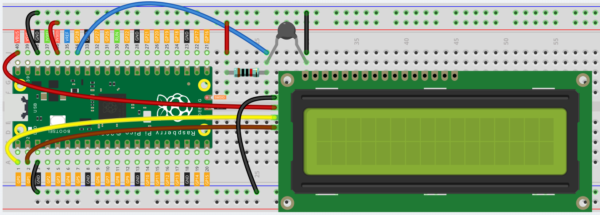

Liquid Crystal Display¶
LCD1602 is a character type liquid crystal display, which can display 32 (16*2) characters at the same time.
As we all know, though LCD and some other displays greatly enrich the man-machine interaction, they share a common weakness. When they are connected to a controller, multiple IOs will be occupied of the controller which has no so many outer ports. Also it restricts other functions of the controller. Therefore, LCD1602 with an I2C bus is developed to solve the problem.
I2C(Inter-Integrated Circuit) bus is a very popular and powerful bus for communication between a master device (or master devices) and a single or multiple slave devices. I2C main controller can be used to control IO expander, various sensors, EEPROM, ADC/DAC and so on. All of these are controlled only by the two pins of host, the serial data (SDA) line and the serial clock line(SCL).
这两个Pin这些必须连接到微控制器的特定引脚才可以运行。在Pico中有两对I2C通信接口，被标记为I2C0与I2C1，如下图。

在这里我们将使用I2C0来控制LCD1602，显示文本。
Wiring¶

将LCD的VCC连接Pico的VBUS。
将LCD的GND连接Pico的GND。
将LCD的SDA连接Pico的GP0，也就是I2C0 SDA。
将LCD的SCL连接Pico的GP1，也就是I2C0 SCL。
Code¶
每一个I2C设备都拥有独特的地址、需要传入独特的指令来运行。这会需要用户查看其 datasheet 才能完全弄懂。这拥有一定的门槛。
但是幸运的是，在互联网上有许多人将一些通用的模块封装成library，以便于我们可以直接使用。 以下是Sunfounder封装好的lcd1602的library。
你需要将其存入Pico，将其命名为 lcd1602.py 作为library使用。
import machine
import time
class LCD():
def __init__(self, addr=63, blen=1):
sda = machine.Pin(0)
scl = machine.Pin(1)
self.bus = machine.I2C(0,sda=sda, scl=scl, freq=400000)
#print(self.bus.scan())
self.addr = addr
self.blen = blen
self.send_command(0x33) # Must initialize to 8-line mode at first
time.sleep(0.005)
self.send_command(0x32) # Then initialize to 4-line mode
time.sleep(0.005)
self.send_command(0x28) # 2 Lines & 5*7 dots
time.sleep(0.005)
self.send_command(0x0C) # Enable display without cursor
time.sleep(0.005)
self.send_command(0x01) # Clear Screen
self.bus.writeto(self.addr, bytearray([0x08]))
def write_word(self, data):
temp = data
if self.blen == 1:
temp |= 0x08
else:
temp &= 0xF7
self.bus.writeto(self.addr, bytearray([temp]))
def send_command(self, cmd):
# Send bit7-4 firstly
buf = cmd & 0xF0
buf |= 0x04 # RS = 0, RW = 0, EN = 1
self.write_word(buf)
time.sleep(0.002)
buf &= 0xFB # Make EN = 0
self.write_word(buf)
# Send bit3-0 secondly
buf = (cmd & 0x0F) << 4
buf |= 0x04 # RS = 0, RW = 0, EN = 1
self.write_word(buf)
time.sleep(0.002)
buf &= 0xFB # Make EN = 0
self.write_word(buf)
def send_data(self, data):
# Send bit7-4 firstly
buf = data & 0xF0
buf |= 0x05 # RS = 1, RW = 0, EN = 1
self.write_word(buf)
time.sleep(0.002)
buf &= 0xFB # Make EN = 0
self.write_word(buf)
# Send bit3-0 secondly
buf = (data & 0x0F) << 4
buf |= 0x05 # RS = 1, RW = 0, EN = 1
self.write_word(buf)
time.sleep(0.002)
buf &= 0xFB # Make EN = 0
self.write_word(buf)
def clear(self):
self.send_command(0x01) # Clear Screen
def openlight(self): # Enable the backlight
self.bus.writeto(self.addr,bytearray([0x08]))
# self.bus.close()
def write(self, x, y, str):
if x < 0:
x = 0
if x > 15:
x = 15
if y < 0:
y = 0
if y > 1:
y = 1
# Move cursor
addr = 0x80 + 0x40 * y + x
self.send_command(addr)
for chr in str:
self.send_data(ord(chr))
def message(self, text):
#print("message: %s"%text)
for char in text:
if char == '\n':
self.send_command(0xC0) # next line
else:
self.send_data(ord(char))
然后，新建一个new file，在这个文件里调用方才储存好的lcd1602 library。
from lcd1602 import LCD
import utime
lcd = LCD()
string = " Hello!\n"
lcd.message(string)
utime.sleep(2)
string = " Sunfounder!"
lcd.message(string)
utime.sleep(2)
lcd.clear()
程序运行后，你将能看到LCD依次出现两行文字，随后消失。
How it works?¶
在lcd1602 library中，我们将lcd1602的相关功能集成到了LCD类中。
你可以用以下语句来使用lcd1602.
import lcd1602 library
from lcd1602 import LCD
声明一个LCD类的对象，命名为lcd。
lcd = LCD()
这句指令会将文字显示在lcd中，需要注意的是，其argument必须是字符串类型，如果我们想要传入integer或者float，必须使用强制转化语句 str()。
lcd.message(string)
如果多次调用该语句，lcd会将这几次调用的文字叠加，直到超出显示范围。这就需要用到以下语句clear the display。
lcd.clear()
What more?¶
我们可以结合thermistor和LCD1602，制作一个室温计。
from lcd1602 import LCD
import machine
import utime
import math
thermistor = machine.ADC(28)
lcd = LCD()
while True:
temperature_value = thermistor.read_u16()
Vr = 3.3 * float(temperature_value) / 65535
Rt = 10000 * Vr / (3.3 - Vr)
temp = 1/(((math.log(Rt / 10000)) / 3950) + (1 / (273.15+25)))
Cel = temp - 273.15
#Fah = Cel * 1.8 + 32
#print ('Celsius: %.2f C Fahrenheit: %.2f F' % (Cel, Fah))
#utime.sleep_ms(200)
string = " Temperature is \n " + str('{:.2f}'.format(Cel))+ " C"
lcd.message(string)
utime.sleep(1)
lcd.clear()